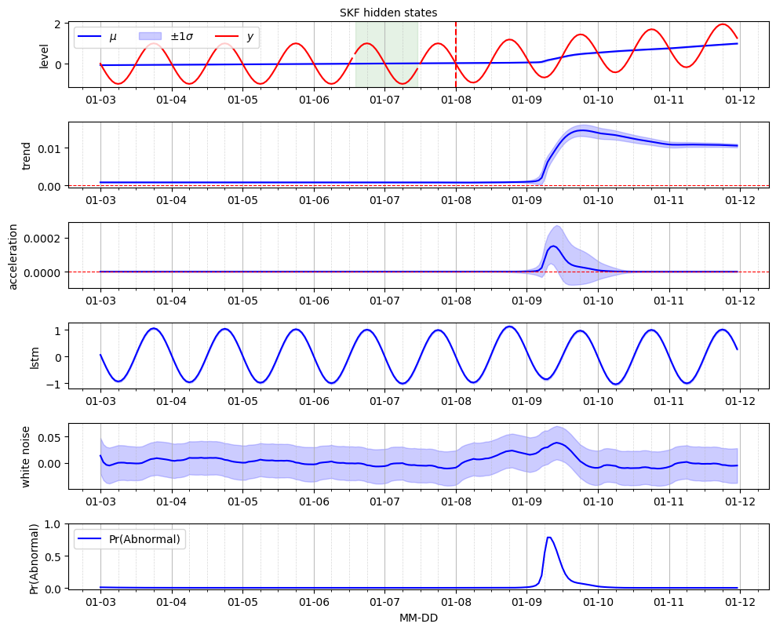

Anomaly detection#
Import libraries#
[1]:
import copy
from pathlib import Path
import pandas as pd
import numpy as np
import matplotlib.pyplot as plt
from pytagi import Normalizer as normalizer
import pytagi.metric as metric
Import from Canari#
[2]:
from canari import (
DataProcess,
Model,
SKF,
plot_data,
plot_prediction,
plot_states,
plot_skf_states,
)
from canari.component import LocalTrend, LocalAcceleration, LstmNetwork, WhiteNoise
/opt/miniconda3/envs/canari/lib/python3.10/site-packages/tqdm/auto.py:21: TqdmWarning: IProgress not found. Please update jupyter and ipywidgets. See https://ipywidgets.readthedocs.io/en/stable/user_install.html
from .autonotebook import tqdm as notebook_tqdm
2025-05-26 14:09:56,885 INFO util.py:154 -- Missing packages: ['ipywidgets']. Run `pip install -U ipywidgets`, then restart the notebook server for rich notebook output.
2025-05-26 14:09:56,972 INFO util.py:154 -- Missing packages: ['ipywidgets']. Run `pip install -U ipywidgets`, then restart the notebook server for rich notebook output.
Read data#
[3]:
project_root = Path.cwd().resolve().parents[1]
data_file = str(project_root / "data/toy_time_series/sine.csv")
df = pd.read_csv(data_file, skiprows=1, delimiter=",", header=None)
# Add synthetic anomaly to data
trend = np.linspace(0, 0, num=len(df))
time_anomaly = 120
new_trend = np.linspace(0, 1, num=len(df) - time_anomaly)
trend[time_anomaly:] = trend[time_anomaly:] + new_trend
df = df.add(trend, axis=0)
#
data_file_time = str(project_root / "data/toy_time_series/sine_datetime.csv")
time_index = pd.read_csv(data_file_time, skiprows=1, delimiter=",", header=None)
time_index = pd.to_datetime(time_index[0])
df.index = time_index
df.index.name = "time"
df.columns = ["values"]
Data preprocess#
[4]:
output_col = [0]
data_processor = DataProcess(
data=df,
time_covariates=["hour_of_day"],
train_split=0.4,
validation_split=0.1,
output_col=output_col,
)
train_data, validation_data, test_data, all_data = data_processor.get_splits()
data_processor.data.head()
[4]:
| values | hour_of_day | |
|---|---|---|
| time | ||
| 2000-01-03 00:00:00 | 0.00 | 0.0 |
| 2000-01-03 01:00:00 | -0.26 | 1.0 |
| 2000-01-03 02:00:00 | -0.50 | 2.0 |
| 2000-01-03 03:00:00 | -0.71 | 3.0 |
| 2000-01-03 04:00:00 | -0.87 | 4.0 |
Define components#
[5]:
local_trend = LocalTrend()
local_acceleration = LocalAcceleration()
pattern = LstmNetwork(
look_back_len=10,
num_features=2,
num_layer=1,
num_hidden_unit=50,
device="cpu",
manual_seed=1,
)
residual = WhiteNoise(std_error=5e-2)
Define normal and abnormal models#
[6]:
# Normal model
model = Model(local_trend, pattern, residual)
# Abnormal model
ab_model = Model(local_acceleration, pattern, residual)
Define Switching Kalman Filter (SKF) model#
[7]:
skf = SKF(
norm_model=model,
abnorm_model=ab_model,
std_transition_error=1e-4,
norm_to_abnorm_prob=1e-4,
)
skf.auto_initialize_baseline_states(train_data["y"][0 : 52 * 3])
Train model, i.e. LSTM neural network#
[8]:
num_epoch = 50
states_optim = None
mu_validation_preds_optim = None
std_validation_preds_optim = None
for epoch in range(num_epoch):
mu_validation_preds, std_validation_preds, states = skf.lstm_train(
train_data=train_data,
validation_data=validation_data,
)
# Unstandardize the predictions
mu_validation_preds_unnorm = normalizer.unstandardize(
mu_validation_preds,
data_processor.std_const_mean[data_processor.output_col],
data_processor.std_const_std[data_processor.output_col],
)
std_validation_preds_unnorm = normalizer.unstandardize_std(
std_validation_preds,
data_processor.std_const_std[data_processor.output_col],
)
validation_obs = data_processor.get_data("validation").flatten()
validation_log_lik = metric.log_likelihood(
prediction=mu_validation_preds_unnorm,
observation=validation_obs,
std=std_validation_preds_unnorm,
)
skf.early_stopping(evaluate_metric=-validation_log_lik, current_epoch=epoch, max_epoch=num_epoch)
if epoch == skf.optimal_epoch:
mu_validation_preds_optim = mu_validation_preds.copy()
std_validation_preds_optim = std_validation_preds.copy()
states_optim = copy.copy(states)
skf.model["norm_norm"].set_memory(states=states, time_step=0)
if skf.stop_training:
break
print(f"Optinal epoch : {skf.optimal_epoch}")
print(f"Validation Log-likelihood :{skf.early_stop_metric: 0.4f}")
Optinal epoch : 49
Validation Log-likelihood :-1.4718
Anomaly detection#
[9]:
filter_marginal_abnorm_prob, states = skf.filter(data=all_data)
smooth_marginal_abnorm_prob, states = skf.smoother()
Hidden states and proability of anomalies#
[14]:
fig, ax = plot_skf_states(
data_processor=data_processor,
states=states,
model_prob=filter_marginal_abnorm_prob,
legend_location="upper left",
)
ax[0].axvline(
x=data_processor.data.index[time_anomaly],
color="r",
linestyle="--",
)
fig.suptitle("SKF hidden states", fontsize=10, y=1)
ax[-1].set_xlabel("MM-DD")
plt.show()
